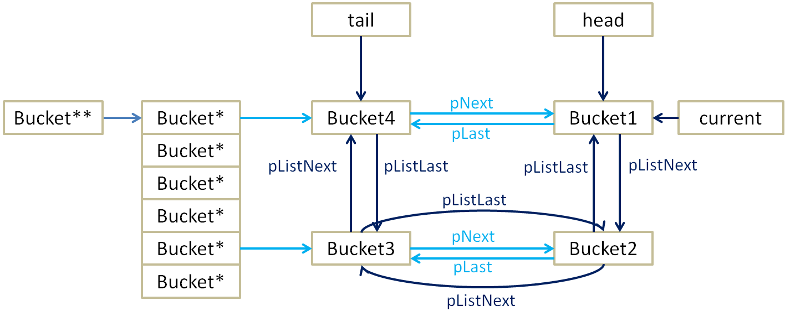

Hash算法总结
隐藏正文
1.什么是Hash算法
主要原理就是把大范围映射到小范围，因此输入范围必须和小范围相当或者比它更小，否则增加冲突。
Hash算法将任意长度的二进制值映射为较短的固定长度的二进制值，这个小的二进制值称为哈希值。哈希值是一段数据唯一且极其紧凑的数值表示形式。如果散列一段明文而且哪怕只更改该段落的一个字母，随后的哈希都将产生不同的值。要找到散列为同一个值的两个不同的输入，在计算上是不可能的，所以数据的哈希值可以检验数据的完整性。实际中的Hash主要有两种应用：加密和压缩。在加密方面，Hash哈希是把一些不同长度的信息转化成杂乱的128位的编码,这些编码值叫做HASH值，最广泛应用的Hash算法有MD4、MD5、SHA1。在压缩方面，Hash哈希是指把一个大范围映射到一个小范围，往往是为了节省空间，使得数据容易保存。
Hash函数：大概就是 value = hash(key)，我们希望key和value之间是唯一的映射关系。
散列表（Hash table，也叫哈希表），是根据关键码值(Key value)而直接进行访问的数据结构。也就是说，它通过把关键码值映射到表中一个位置来访问记录，以加快查找的速度。这个映射函数叫做散列函数（Hash函数），存放记录的数组叫做散列表（Hash表）。（是一种典型的“空间换时间”的做法）。哈希表的做法其实很简单，就是把Key通过一个固定的算法函数既所谓的哈希函数转换成一个整型数字，然后就将该数字对数组长度进行取余，取余结果就当作数组的下标，将value存储在以该数字为下标的数组空间里。而当使用哈希表进行查询的时候，就是再次使用哈希函数将key转换为对应的数组下标，并定位到该空间获取value，如此一来，就可以充分利用到数组的定位性能进行数据定位。
Hash函数逼近单向函数，所以可以用来对数据进行加密。（单项函数：如果某个函数在给定输入的时候，很容易计算出其结果来；而当给定结果的时候，很难计算出输入来）
不同的应用对Hash函数有着不同的要求：用于加密的Hash函数主要考虑它和单项函数的差距，而用于查找的Hash函数主要考虑它映射到小范围的冲突率。
了解了hash基本定义，就不能不提到一些着名的hash算法，MD5 和 SHA-1 能够说是眼下应用最广泛的Hash算法，而它们都是以 MD4 为基础设计的。那么他们都是什么意思呢?
这里简单说一下：
(1) MD4
MD4(RFC 1320)是 MIT 的 Ronald L. Rivest 在 1990 年设计的，MD 是 Message Digest 的缩写。它适用在32位字长的处理器上用快速软件实现–它是基于 32 位操作数的位操作来实现的。
(2) MD5
MD5(RFC 1321)是 Rivest 于1991年对MD4的改进版本号。它对输入仍以512位分组，其输出是4个32位字的级联，与 MD4 同样。MD5比MD4来得复杂，而且速度较之要慢一点，但更安全，在抗分析和抗差分方面表现更好
(3) SHA-1 及其它
SHA1是由NIST NSA设计为同DSA一起使用的，它对长度小于264的输入，产生长度为160bit的散列值，因此抗穷举(brute-force)性更好。SHA-1 设计时基于和MD4同样原理,而且模仿了该算法。
哈希表不可避免冲突(collision)现象：对不同的keyword可能得到同一哈希地址 即key1≠key2，而hash(key1)=hash(key2)。因此，在建造哈希表时不仅要设定一个好的哈希函数，并且要设定一种处理冲突的方法。可例如以下描写叙述哈希表：依据设定的哈希函数H(key)和所选中的处理冲突的方法，将一组keyword映象到一个有限的、地址连续的地址集(区间)上并以keyword在地址集中的“象”作为对应记录在表中的存储位置，这样的表被称为哈希表。
对于动态查找表而言，1) 表长不确定；2)在设计查找表时，仅仅知道keyword所属范围，而不知道确切的keyword。因此，普通情况需建立一个函数关系，以f(key)作为keyword为key的录在表中的位置，通常称这个函数f(key)为哈希函数。(注意：这个函数并不一定是数学函数)
哈希函数是一个映象，即：将keyword的集合映射到某个地址集合上，它的设置非常灵活，仅仅要这个地址集合的大小不超出同意范围就可以。
现实中哈希函数是须要构造的，而且构造的好才干使用的好。
那么这些Hash算法究竟有什么用呢?
Hash算法在信息安全方面的应用主要体如今下面的3个方面：
(1) 文件校验
我们比较熟悉的校验算法有奇偶校验和CRC校验，这2种校验并没有抗数据篡改的能力，它们一定程度上能检测并纠正传输数据中的信道误码，但却不能防止对数据的恶意破坏。MD5 Hash算法的”数字指纹”特性，使它成为眼下应用最广泛的一种文件完整性校验和(Checksum)算法，不少Unix系统有提供计算md5 checksum的命令。
(2) 数字签名
Hash 算法也是现代password体系中的一个重要组成部分。因为非对称算法的运算速度较慢，所以在数字签名协议中，单向散列函数扮演了一个重要的角色。 对 Hash 值，又称”数字摘要”进行数字签名，在统计上能够觉得与对文件本身进行数字签名是等效的。并且这种协议还有其它的长处。
(3) 鉴权协议
例如以下的鉴权协议又被称作挑战–认证模式：在传输信道是可被侦听，但不可被篡改的情况下，这是一种简单而安全的方法。
文件hash值
MD5-Hash-文件的数字文摘通过Hash函数计算得到。无论文件长度怎样，它的Hash函数计算结果是一个固定长度的数字。与加密算法不同，这一个Hash算法是一个不可逆的单向函数。採用安全性高的Hash算法，如MD5、SHA时，两个不同的文件差点儿不可能得到同样的Hash结果。因此，一旦文件被改动，就可检测出来。
Hash函数还有另外的含义。实际中的Hash函数是指把一个大范围映射到一个小范围。把大范围映射到一个小范围的目的往往是为了节省空间，使得数据easy保存。除此以外，Hash函数往往应用于查找上。所以，在考虑使用Hash函数之前，须要明确它的几个限制：
- Hash的主要原理就是把大范围映射到小范围；所以，你输入的实际值的个数必须和小范围相当或者比它更小。不然冲突就会非常多。
- 因为Hash逼近单向函数；所以，你能够用它来对数据进行加密。
- 不同的应用对Hash函数有着不同的要求；比方，用于加密的Hash函数主要考虑它和单项函数的差距，而用于查找的Hash函数主要考虑它映射到小范围的冲突率。
应用于加密的Hash函数已经探讨过太多了，在作者的博客里面有更具体的介绍。所以，本文仅仅探讨用于查找的Hash函数。
Hash函数应用的主要对象是数组（比方，字符串），而其目标通常是一个int类型。下面我们都依照这样的方式来说明。
就是为该关键字的记录扎到另一个“空”的哈希地址。即在处理哈希地址的冲突时，若得到的另一个哈希地址H1仍然发生冲突，则再求下一个地址H2，若H2仍然冲突，再求的H3，直至Hk不发生冲突为止，则Hk为记录在表中的地址。
2.常见的Hash算法
//为了方便生成32位或者64位散列
typedef unsigned int ub4;/*无符号4个字节*/
typedef unsigned char ub1;/*无符号1个字节*/
1.加法Hash
/*
* 加法Hash算法
* param key 输入字符串
* param len 字符串长度
* param prime 为质数
* return hash值
*/
ub4 addtive(char *key,int len,ub4 prime)
{
ub4 hash,i;
for(hash = len,i = 0;i < len;++ i)
hash += key[i];
return (hash % prime);
}
这里的prime是任意的质数，看得出，结果的值域为[0,prime-1]。
2.位运算Hash
2.1.旋转Hash
/*
* 位运算Hash
* 旋转hash
* param key 输入字符串
* param len 字符串长度
* param prime 质数
* return hash值
*/
ub4 rotating(char *key,ub4 len,ub4 prime)
{
ub4 hash,i;
for(hash = len,i = 0;i < len; ++i)
hash = (hash << 4)^(hash >> 28)^key[i];
return (hash % prime);
}
2.2.一次一个Hash
/*
* 一次一个Hash
* static int mask = 0x8765fed1;
* mask最好是质数
* param key 输入字符串
* param len 字符串长度
* return hash值
*/
ub4 one_at_a_time(char *key, ub4 len)
{
ub4 hash, i;
for (hash=0, i=0; i<len; ++i)
{
hash += key[i];
hash += (hash << 10);
hash ^= (hash >> 6);
}
hash += (hash << 3);
hash ^= (hash >> 11);
hash += (hash << 15);
return (hash & mask);
}
3.乘法Hash
这种类型的Hash函数利用了乘法的不相关性（乘法的这种性质，最有名的莫过于平方取头尾的随机数生成算法，虽然这种算法效果并不好）。
3.1.Bernstein’s hash
/*
* Bernstein's hash
* @param key 输入字节数组
* @param level 初始hash常量
* @return 结果hash
* 这样的类型的Hash函数利用了乘法的不相关性（乘法的这样的性质，最有名的莫过于平方取头尾的随机数生成算法，尽管这样的算法效果并不好）
*/
ub4 bernstein(ub1 *key, ub4 len, ub4 level)
{
ub4 hash = level;
ub4 i;
for (i=0; i<len; ++i)
hash = 33*hash + key[i];
return hash;
}
3.2.FNV哈希算法
由来：FNV哈希算法全名为Fowler-Noll-Vo算法，是以三位发明人Glenn Fowler，Landon Curt Noll，Phong Vo的名字来命名的，最早在1991年提出。
特点和用途：FNV能快速hash大量数据并保持较小的冲突率，它的高度分散使它适用于hash一些非常相近的字符串，比如URL，hostname，文件名，text，IP地址等。
算法版本：FNV算法有两个版本FNV-1和FNV-1a
算法描述：
相关变量：
hash值：一个n位的unsigned int型hash值
offset_basis：初始的哈希值
FNV_prime：FNV用于散列的质数
octet_of_data：8位数据（即一个字节）
FNV-1描述：
hash = offset_basis
for each octet_of_data to be hashed
hash = hash * FNV_prime
hash = hash xor octet_of_data
return hash
FNV-1a描述：
hash = offset_basis
for each octet_of_data to be hashed
hash = hash xor octet_of_data
hash = hash * FNV_prime
return hash
FNV-1a和FNV-1的唯一区别就是xor和multiply的顺序不同，他们所采用的FNV_prime和offset_basis都相同，有人认为FNV-1a在进行小数据（小于4个字节）哈希时有更好的性能。
区别是有两句操作顺序调换，产生FNV-1a的原因是，有些人使用FNV-1a代替FNV-1发现算法离散性或CPU利用效率更好（我感觉应该没什么太大差距，只是微小的）。
for each octet_of_data to be hashed 意思是对于你要算哈希值的数，它的每一个字节。
hash = hash * FNV_prime，是包含取模运算的，具体看你采用多少位的哈希函数。例如，你用32为哈希，hash = hash * FNV_prime % （2的32次方）；
hash = hash xor octet_of_data，意思是把当前取来的字节和当前的hash值的第八位做抑或运算。
32 bit FNV_prime = 224 + 28 + 0x93 = 16777619
64 bit FNV_prime = 240 + 28 + 0xb3 = 1099511628211
128 bit FNV_prime = 288 + 28 + 0x3b = 309485009821345068724781371
256 bit FNV_prime = 2168 + 28 + 0x63 = 374144419156711147060143317175368453031918731002211
512 bit FNV_prime = 2344 + 28 + 0x57 = 35835915874844867368919076489095108449946327955754392558399825615420669938882575126094039892345713852759
1024 bit FNV_prime = 2680 + 28 + 0x8d = 5016456510113118655434598811035278955030765345404790744303017523831112055108147451509157692220295382716162651878526895249385292291816524375083746691371804094271873160484737966720260389217684476157468082573
以上这几个数都是质数（哈希的理论基石，质数分辨定理，我理解也不深），不用管为什么，用的时候照搬就是了。
/*
* modified FNV hash function (see http://www.isthe.com/chongo/tech/comp/fnv/)
* @param key 输入字节数组
* @param level 初始hash常量
* @return 结果hash
*/
ub4 hash_modfnv(const void *data, size_t len, ub4 seed)
{
const uchar *p = (const uchar *)data;
ub4 hash;
hash = 2166136261u ^ seed;
while (len-- >= 1)
{
hash = (hash ^ *(p++)) * 16777619u;
}
hash += hash << 13;
hash ^= hash >> 7;
hash += hash << 3;
hash ^= hash >> 17;
hash += hash << 5;
return hash;
}
//sheepdog中64位FNV-1a算法的实现
/*
* 64 bit FNV-1a non-zero initial basis
*/
#define FNV1A_64_INIT ((uint64_t) 0xcbf29ce484222325ULL)
/*
* 64 bit Fowler/Noll/Vo FNV-1a hash code
*/
// 调用时，hval的参数值为FNV1A_64_INT,即算法描述中的offset_basis
static inline uint64_t fnv_64a_buf(void *buf, size_t len, uint64_t hval)
{
unsigned char *bp = (unsigned char *) buf;
unsigned char *be = bp + len;
while (bp < be) {
hval ^= (uint64_t) *bp++;
hval += (hval << 1) + (hval << 4) + (hval << 5) + (hval << 7) + (hval << 8) + (hval << 40);
}
return hval;
}
4.除法Hash
除法和乘法一样，同样具有表面上看起来的不相关性。不过，因为除法太慢，这种方式几乎找不到真正的应用。需要注意的是，我们在前面看到的hash的 结果除以一个prime的目的只是为了保证结果的范围。如果你不需要它限制一个范围的话，可以使用如下的代码替代hash%prime： hash = hash ^ (hash>>10) ^ (hash>>20)。
5.查表Hash
查表Hash最有名的样例莫过于CRC系列算法。尽管CRC系列算法本身并非查表，可是，查表是它的一种最快的实现方式。查表Hash中有名的例子有：Universal Hashing和Zobrist Hashing。他们的表格都是随机生成的.
5.1.Pearson’s Hash
/*
Pearson's Hash
*/
char pearson(char *key, ub4 len, char tab[256])
{
char hash;
ub4 i;
for (hash=len, i=0; i<len; ++i)
hash=tab[hash^key[i]];
return (hash);
}
5.2.Universal Hashing
/*
Universal Hashing
*/
ub4 universal(char *key, ub4 len, ub4 mask, ub4 tab[MAXBITS])
{
ub4 hash, i;
for (hash=len, i=0; i<(len<<3); i+=8)
{
register char k = key[i>>3];
if (k&0x01) hash ^= tab[i+0];
if (k&0x02) hash ^= tab[i+1];
if (k&0x04) hash ^= tab[i+2];
if (k&0x08) hash ^= tab[i+3];
if (k&0x10) hash ^= tab[i+4];
if (k&0x20) hash ^= tab[i+5];
if (k&0x40) hash ^= tab[i+6];
if (k&0x80) hash ^= tab[i+7];
}
return (hash & mask);
}
（Universal Hashing）全域哈希的基本思想是在执行开始时，从一组哈希函数中，随机地抽取一个作为要使用的哈希函数。就像在快速排序中一样，随机化保证了没有哪一种输入会始终导致最坏情况的发生。同时，随机化也使得即使是对同一个输入，算法在每一次执行时的情况也都不一样。这样就确保了对于任何输入，算法都具有较好的平均运行情况。
hash a,b(key) = ((a\*key + b) mod p) mod m
其中，p 为一个足够大的质数，使得每一个可能的关键字 key 都落在 0 到 p - 1 的范围内。m 为哈希表中槽位数。任意 a∈{1,2,3,…,p-1}，b∈{0,1,2,…,p-1}。mod为求余数。
5.3.Goulburn Hash
/*
* Goulburn Hash
*/
u4 goulburn( const unsigned char *cp, size_t len, uint32_t last_value)
{
register u4 h = last_value;
int u;
for( u=0; u<len; ++u ) {
h += g_table0[ cp[u] ];
h ^= (h << 3) ^ (h >> 29);
h += g_table1[ h >> 25 ];
h ^= (h << 14) ^ (h >> 18);
h += 1783936964UL;
}
return h;
}
完整的CRC Hashing
/*完整的CRCHash*/
/* By Bob Jenkins, (c) 2006, Public Domain */
#include <stdio.h>
#include <stddef.h>
#include <string.h>
typedef unsigned long ub4;
typedef unsigned char ub1;
/* every byte is an arbitrary permutation of 0..255 */
static const ub4 gencrctab[256] = {
0x46d1e192, 0x66edf9aa, 0x927fc9e5, 0xa53baacc, 0x29b47658, 0x5a411a01,
0x0e66d5bd, 0x0dd5b1db, 0xcb38340e, 0x04d4ebb6, 0x98bc4f54, 0x36f20f2c,
0x4a3047ed, 0x1ec1e0eb, 0x568c0c1f, 0x6a731432, 0x81367fc6, 0xe3e25237,
0xe7f64884, 0x0fa59f64, 0x4f3109de, 0xf02d61f5, 0x5daec03b, 0x7f740e83,
0x056ff2d8, 0x2026cc0a, 0x7ac2112d, 0x82c55605, 0xb0911ef2, 0xa7b88e4c,
0x89dca282, 0x4b254d27, 0x7694a6d3, 0xd229eadd, 0x8e8f3738, 0x5bee7a55,
0x012eb6ab, 0x08dd28c8, 0xb5abc274, 0xbc7931f0, 0xf2396ed5, 0xe4e43d97,
0x943f4b7f, 0x85d0293d, 0xaed83a88, 0xc8f932fc, 0xc5496f20, 0xe9228173,
0x9b465b7d, 0xfda26680, 0x1ddeab35, 0x0c4f25cb, 0x86e32faf, 0xe59fa13a,
0xe192e2c4, 0xf147da1a, 0x67620a8d, 0x5c9a24c5, 0xfe6afde2, 0xacad0250,
0xd359730b, 0xf35203b3, 0x96a4b44d, 0xfbcacea6, 0x41a165ec, 0xd71e53ac,
0x835f39bf, 0x6b6bde7e, 0xd07085ba, 0x79064e07, 0xee5b20c3, 0x3b90bd65,
0x5827aef4, 0x4d12d31c, 0x9143496e, 0x6c485976, 0xd9552733, 0x220f6895,
0xe69def19, 0xeb89cd70, 0xc9bb9644, 0x93ec7e0d, 0x2ace3842, 0x2b6158da,
0x039e9178, 0xbb5367d7, 0x55682285, 0x4315d891, 0x19fd8906, 0x7d8d4448,
0xb4168a03, 0x40b56a53, 0xaa3e69e0, 0xa25182fe, 0xad34d16c, 0x720c4171,
0x9dc3b961, 0x321db563, 0x8b801b9e, 0xf5971893, 0x14cc1251, 0x8f4ae962,
0xf65aff1e, 0x13bd9dee, 0x5e7c78c7, 0xddb61731, 0x73832c15, 0xefebdd5b,
0x1f959aca, 0xe801fb22, 0xa89826ce, 0x30b7165d, 0x458a4077, 0x24fec52a,
0x849b065f, 0x3c6930cd, 0xa199a81d, 0xdb768f30, 0x2e45c64a, 0xff2f0d94,
0x4ea97917, 0x6f572acf, 0x653a195c, 0x17a88c5a, 0x27e11fb5, 0x3f09c4c1,
0x2f87e71b, 0xea1493e4, 0xd4b3a55e, 0xbe6090be, 0xaf6cd9d9, 0xda58ca00,
0x612b7034, 0x31711dad, 0x6d7db041, 0x8ca786b7, 0x09e8bf7a, 0xc3c4d7ea,
0xa3cd77a8, 0x7700f608, 0xdf3de559, 0x71c9353f, 0x9fd236fb, 0x1675d43e,
0x390d9e9a, 0x21ba4c6b, 0xbd1371e8, 0x90338440, 0xd5f163d2, 0xb140fef9,
0x52f50b57, 0x3710cf67, 0x4c11a79c, 0xc6d6624e, 0x3dc7afa9, 0x34a69969,
0x70544a26, 0xf7d9ec98, 0x7c027496, 0x1bfb3ba3, 0xb3b1dc8f, 0x9a241039,
0xf993f5a4, 0x15786b99, 0x26e704f7, 0x51503c04, 0x028bb3b8, 0xede5600c,
0x9cb22b29, 0xb6ff339b, 0x7e771c43, 0xc71c05f1, 0x604ca924, 0x695eed60,
0x688ed0bc, 0x3e0b232f, 0xf8a39c11, 0xbae6e67c, 0xb8cf75e1, 0x970321a7,
0x5328922b, 0xdef3df2e, 0x8d0443b0, 0x2885e3ae, 0x6435eed1, 0xcc375e81,
0xa98495f6, 0xe0bff114, 0xb2da3e4f, 0xc01b5adf, 0x507e0721, 0x6267a36a,
0x181a6df8, 0x7baff0c0, 0xfa6d6c13, 0x427250b2, 0xe2f742d6, 0xcd5cc723,
0x2d218be7, 0xb91fbbb1, 0x9eb946d0, 0x1c180810, 0xfc81d602, 0x0b9c3f52,
0xc2ea456f, 0x1165b2c9, 0xabf4ad75, 0x0a56fc8c, 0x12e0f818, 0xcadbcba1,
0x2586be56, 0x952c9b46, 0x07c6a43c, 0x78967df3, 0x477b2e49, 0x2c5d7b6d,
0x8a637272, 0x59acbcb4, 0x74a0e447, 0xc1f8800f, 0x35c015dc, 0x230794c2,
0x4405f328, 0xec2adba5, 0xd832b845, 0x6e4ed287, 0x48e9f7a2, 0xa44be89f,
0x38cbb725, 0xbf6ef4e6, 0xdc0e83fa, 0x54238d12, 0xf4f0c1e3, 0xa60857fd,
0xc43c64b9, 0x00c851ef, 0x33d75f36, 0x5fd39866, 0xd1efa08a, 0xa0640089,
0x877a978b, 0x99175d86, 0x57dfacbb, 0xceb02de9, 0xcf4d5c09, 0x3a8813d4,
0xb7448816, 0x63fa5568, 0x06be014b, 0xd642fa7b, 0x10aa7c90, 0x8082c88e,
0x1afcba79, 0x7519549d, 0x490a87ff, 0x8820c3a0,
};
/* how the values of gencrc[] were derived */
void build_table()
{
ub4 tab[256];
ub4 i;
/* fill tab[] with random permutations of 0..255 in each byte */
for (i=0; i<256; ++i) {
ub4 j;
ub1 x=i;
for (j=0; j<5; ++j) {x+=1; x += x<<1; x ^= x>>1;}
tab[i] = x;
for (j=0; j<5; ++j) {x+=2; x += x<<1; x ^= x>>1;}
tab[i] ^= (((ub4)x)<<8);
for (j=0; j<5; ++j) {x+=3; x += x<<1; x ^= x>>1;}
tab[i] ^= (((ub4)x)<<16);
for (j=0; j<5; ++j) {x+=4; x += x<<1; x ^= x>>1;}
tab[i] ^= (((ub4)x)<<24);
}
/* verify that 0..255 appears in each byte exactly once */
for (i=0; i<256; ++i) {
ub4 count, j;
for (count=0, j=0; j<256; ++j) if ((tab[j]&0xff)==i) ++count;
if (count != 1) printf("bad1! %d %d\n", i, count);
for (count=0, j=0; j<256; ++j) if (((tab[j]>>8)&0xff)==i) ++count;
if (count != 1) printf("bad2! %d %d\n", i, count);
for (count=0, j=0; j<256; ++j) if (((tab[j]>>16)&0xff)==i) ++count;
if (count != 1) printf("bad3! %d %d\n", i, count);
for (count=0, j=0; j<256; ++j) if (((tab[j]>>24)&0xff)==i) ++count;
if (count != 1) printf("bad4! %d %d\n", i, count);
}
/* print out the table */
for (i=0; i<256; ++i) {
printf("0x%.8lx, ", tab[i]);
if (i%6 == 5) printf("\n");
}
}
/* the actual hash function */
ub4 gencrc(const void *key, ub4 len, ub4 hash)
{
ub4 i;
const ub1 *k = key;
for (hash=len, i=0; i<len; ++i)
hash = (hash >> 8) ^ gencrctab[(hash & 0xff) ^ k[i]];
return hash;
}
/* To use, try "gcc -O gencrc.c -o gencrc; gencrc < gencrc.c" */
int main()
{
char s[1000];
while (gets(s)) printf("%.8lx\n", gencrc(s, strlen(s), 0));
return 0;
}
- 混合Hash
混合Hash算法利用了以上各种方式。各种常见的Hash算法，比方MD5、Tiger都属于这个范围。它们一般非常少在面向查找的Hash函数里面使用。
7、其他未整理的Hash算法
MurmurHash
###3.Hash算法冲突###
比方我们存储70个元素，但我们可能为这70个元素申请了100个元素的空间。70/100=0.7，这个数字称为负载因子。我们之所以这样做，也是为了“高速存取”的目的。我们基于一种结果尽可能随机平均分布的固定函数H为每一个元素安排存储位置，这样就能够避免遍历性质的线性搜索，以达到高速存取。可是因为此随机性，也必定导致一个问题就是冲突。所谓冲突，即两个元素通过散列函数H得到的地址同样，那么这两个元素称为“同义词”。这类似于70个人去一个有100个椅子的饭店吃饭。散列函数的计算结果是一个存储单位地址，每一个存储单位称为“桶”。设一个散列表有m个桶，则散列函数的值域应为[0,m-1]。
解决冲突是一个复杂问题。冲突主要取决于：
（1）散列函数，一个好的散列函数的值应尽可能平均分布。
（2）处理冲突方法。
（3）负载因子的大小。太大不一定就好，并且浪费空间严重，负载因子和散列函数是联动的。
处理冲突的方法：
1.开放寻址法
开放寻址法的最简单的一种实现就是线性探查（Linear Probing），步骤如下：
①、当插入新的元素时，使用哈希函数在哈希表中定位元素位置；
②、检查哈希表中该位置是否已经存在元素。如果该位置内容为空，则插入并返回，否则转向步骤 3。
③、如果该位置为 i，则检查 i+1 是否为空，如果已被占用，则检查 i+2，依此类推，直到找到一个内容为空的位置。
缺点：
我们可以看到一个现象：当表中i,i+1,i+2位置上已经填有记录时，下一个哈希地址为i,i+1,i+2和i+3的记录都将填入i+3的位置，这种在处理冲突过程中发生的两个第一个哈希地址不同的记录争夺同一个后继哈希地址的现象称为“二次聚集”，即在处理同义词的冲突过程中又添加了非同义词的冲突。但另一方面，用线性探测再散列处理冲突可以保证做到：只要哈希表未填满，总能找到一个不发生冲突的地址Hk。而二次探测再散列只有在哈希表长m为形如4j+3（j为整数）的素数时才可能。
即开放定址法会造成二次聚集的现象，对查找不利。
2.再哈希法
Hi = RHi（key），i=1,2,…k
RHi均是不同的哈希函数，即在同义词产生地址冲突时计算另一个哈希函数地址，直到不发生冲突为止。这种方法不易产生聚集，但是增加了计算时间。
缺点：增加了计算时间。
3.链地址法（拉链法）
将所有关键字为同义词的记录存储在同一线性链表中。
拉链法的优点:
①拉链法处理冲突简单，且无堆积现象，即非同义词决不会发生冲突，因此平均查找长度较短；
②由于拉链法中各链表上的结点空间是动态申请的，故它更适合于造表前无法确定表长的情况；
③开放定址法为减少冲突，要求装填因子α较小，故当结点规模较大时会浪费很多空间。而拉链法中可取α≥1，且结点较大时，拉链法中增加的指针域可忽略不计，因此节省空间；
④在用拉链法构造的散列表中，删除结点的操作易于实现。只要简单地删去链表上相应的结点即可。而对开放地址法构造的散列表，删除结点不能简单地将被删结 点的空间置为空，否则将截断在它之后填人散列表的同义词结点的查找路径。这是因为各种开放地址法中，空地址单元(即开放地址)都是查找失败的条件。因此在 用开放地址法处理冲突的散列表上执行删除操作，只能在被删结点上做删除标记，而不能真正删除结点
拉链法的缺点：
拉链法的缺点是：指针需要额外的空间，故当结点规模较小时，开放定址法较为节省空间，而若将节省的指针空间用来扩大散列表的规模，可使装填因子变小，这又减少了开放定址法中的冲突，从而提高平均查找速度
4.建立一个公共溢出区
假设哈希函数的值域为[0,m-1]，则设向量HashTable[0…m-1]为基本表，每个分量存放一个记录，另设立向量OverTable[0….v]为溢出表。所有关键字和基本表中关键字为同义词的记录，不管他们由哈希函数得到的哈希地址是什么，一旦发生冲突，都填入溢出表。
查找过程中，关键码的比较次数，取决于产生冲突的多少，产生的冲突少，查找效率就高，产生的冲突多，查找效率就低。因此，影响产生冲突多少的因素，也就是影响查找效率的因素。影响产生冲突多少有下面三个因素：1. 散列函数是否均匀；2. 处理冲突的方法；3. 散列表的装填因子。
散列表的装填因子定义为：α= 填入表中的元素个数 / 散列表的长度
α是散列表装满程度的标志因子。因为表长是定值，α与“填入表中的元素个数”成正比，所以，α越大，填入表中的元素较多，产生冲突的可能性就越大；α越小，填入表中的元素较少，产生冲突的可能性就越小。
实际上，散列表的平均查找长度是装填因子α的函数，仅仅是不同处理冲突的方法有不同的函数。
4.查找
从哈希表的查找过程可见：
1）虽然哈希表在关键字与记录的存储位置直接建立了直接映像，但是由于“冲突”的产生，使得哈希表的查找过程仍然是一个给定值和关键字进行比较的过程。因此仍需以平均查找长度作为衡量哈希表的查找效率的量度。
2)查找过程中需和给定值进行比较的关键字的个数取决于下列三个因素：哈希函数，处理冲突的方法和哈希表的装填因子。
在一般情况下，处理冲突方法相同的哈希表，其平均查找长度依赖于哈希表的装填因子。
装填因子=（表中填入的记录数）/(哈希表的长度).
装填因子越小，发生冲突的可能性就越小；反之，装填因子越大，表中已经填入的记录越多，再填记录时，发生冲突的可能性就越大，则查找时，给定值需与之进行比较的关键字的个数也就越多。
5.关于Hash使用与学习
首先一定要明白Hash表的拉链法。因为很多应用都是采用Hash表的拉链法。对于拉链法，我们可以理解为是一个链表的数组。1）数组的每一个元素都是一个链表。2）一个链表中的所有结点都具有相同的Hash值，其Hash值就是这个数组元素的下标。
6.HASH进阶(PHP底层Hash设计)
查看PHP的hash底层源码：
PHP的Hash采用的是目前最为普遍的DJBX33A (Daniel J. Bernstein, Times 33 with Addition), 这个算法被广泛运用与多个软件项目,Apache, Perl和Berkeley DB等。对于字符串而言这是目前所知道的最好的哈希算法，原因在于该算法的速度非常快，而且分类非常好(冲突小,分布均匀)
PHP的HashTable采用的拉链法来解决冲突。
PHP的Hash采用的是目前最为普遍的DJBX33A (Daniel J. Bernstein, Times 33 with Addition), 这个算法被广泛运用与多个软件项目,Apache, Perl和Berkeley DB等. 对于字符串而言这是目前所知道的最好的哈希算法，原因在于该算法的速度非常快，而且分类非常好(冲突小,分布均匀).
算法的核心思想就是:
hash(i) = hash(i-1) * 33 + str[i]
在zend_hash.h中,我们可以找到在PHP中的这个算法:
static inline ulong zend_inline_hash_func(char *arKey, uint nKeyLength)
{
register ulong hash = 5381;
/* variant with the hash unrolled eight times */
for (; nKeyLength >= 8; nKeyLength -= {
hash = ((hash << 5) + hash) + *arKey++;
hash = ((hash << 5) + hash) + *arKey++;
hash = ((hash << 5) + hash) + *arKey++;
hash = ((hash << 5) + hash) + *arKey++;
hash = ((hash << 5) + hash) + *arKey++;
hash = ((hash << 5) + hash) + *arKey++;
hash = ((hash << 5) + hash) + *arKey++;
hash = ((hash << 5) + hash) + *arKey++;
}
switch (nKeyLength) {
case 7: hash = ((hash << 5) + hash) + *arKey++; /* fallthrough... */
case 6: hash = ((hash << 5) + hash) + *arKey++; /* fallthrough... */
case 5: hash = ((hash << 5) + hash) + *arKey++; /* fallthrough... */
case 4: hash = ((hash << 5) + hash) + *arKey++; /* fallthrough... */
case 3: hash = ((hash << 5) + hash) + *arKey++; /* fallthrough... */
case 2: hash = ((hash << 5) + hash) + *arKey++; /* fallthrough... */
case 1: hash = ((hash << 5) + hash) + *arKey++; break;
case 0: break;
EMPTY_SWITCH_DEFAULT_CASE()
}
return hash;
}
相比在Apache和Perl中直接采用的经典Times 33算法:
hashing function used in Perl 5.005:
# Return the hashed value of a string: $hash = perlhash("key")
# (Defined by the PERL_HASH macro in hv.h)
sub perlhash
{
$hash = 0;
foreach (split //, shift) {
$hash = $hash*33 + ord($_);
}
return $hash;
}
在PHP的hash算法中, 我们可以看出很处细致的不同.
首先, 最不一样的就是, PHP中并没有使用直接乘33, 而是采用了:hash << 5 + hash
这样当然会比用乘快了.
然后, 特别要主意的就是使用的unrolled, 我前几天看过一片文章讲Discuz的缓存机制, 其中就有一条说是Discuz会根据帖子的热度不同采用不同的缓存策略, 根据用户习惯,而只缓存帖子的第一页(因为很少有人会翻帖子).
于此类似的思想, PHP鼓励8位一下的字符索引, 他以8为单位使用unrolled来提高效率, 这不得不说也是个很细节的,很细致的地方.
另外还有inline, register变量 … 可以看出PHP的开发者在hash的优化上也是煞费苦心
最后就是, hash的初始值设置成了5381, 相比在Apache中的times算法和Perl中的Hash算法(都采用初始hash为0)。
根据PHP源码的hash设计
获取需求
1.在项目中，很多情况下HashTable的key和value都是内置基础类型（如int、double），字符串的情况也比较多，其他的复杂情况极少。即我们的HashTable更多的是处理内置类型数据或者字符串数据。
2.需要支持对key、value按照插入顺序进行遍历。
方案：
考虑到内置类型的size最大只有8Byte，而且所有指针本身的大小也是8Byte（64bit 的机器），因此我们只需要一个8Byte的空间来存错所有的基础类型的值，或者指针（一般是char*）。这样当面对基础类型的时候，不需要malloc额外的空间来存储，在遇到字符串类型（char *）的数据时，使用malloc申请内存空间存储字符串内容，并将指针存在这个8Byte的空间中。
同时HashTable要维护当前key和value的类型是什么，需要在插入数据和查找数据时根据key和value的类型做对应的类型转换。
key和value都支持有限的类型：key的类型只支持int、long、char*；value的类型支持char、short、int、long、float、double、char*。
至于按照插入顺序进行遍历，则只需要对插入的每个元素维护一个全局的指针域即可，这个可以参考Java中LinkedHashMap的实现。
数据结构设计：
考虑到PHP的Hash情况，我们对HashTable的结构设计如下：
#define VLEN 8
#define TNLEN 32
typedef unsigned long ulong;
typedef unsigned int uint;
typedef struct _bucket {
ulong h; /* hash value of key, keyvalue if key is a uint or ulong */
char * key; /* the point to key , if key is a string */
char value[VLEN]; /* store a var of builtin type in a 8Byte buffer */
struct _bucket *pListNext;
struct _bucket *pListLast;
struct _bucket *pNext;
struct _bucket *pLast;
} Bucket;
typedef struct _hashtable{
int nTableSize;
int nTableMask;
int nNumOfElements;
char keyType[TNLEN]; /* can be "int","long","char*" */
char valueType[TNLEN]; /* can be "char","short","int","long","float","double","char*" */
Bucket * pInternalPointer;
Bucket * pListHead;
Bucket * pListTail;
Bucket ** arBuckets;
} HashTable;
内存结构：
假设我们创建一个size（桶数）为6的HashTable，并且尝试插入4个元素，其中第一个元素和第四个元素hash冲突，第二个元素与第三个元素hash冲突。那么按照设计，该HashTable在内存中的结构如下图所示：

在按键查找时，先通过计算hash值，并计算hash值对应的桶的索引[0,6]，然后按照蓝色箭头pNext（指针）的指向即可找到对应的元素（或者找不到）。
在按照插入顺序遍历时，从head指针开始，按照墨色箭头pListNext（指针） 的指向即可完成元素的遍历。
接口需求：
我们希望这个HashTable能够支持多种数据类型，而且在使用的时候尽可能的方便。
用户在创建HashTable的实例时指定key和value的类型，在进行增、删、改、查以及遍历操作时直接使用对应的类型操作即可。
假设用户系统通过如下方式访问该HashTable：
/*创建HashTable实例*/
HashTable * ht = create_hashtable(100,char*,double); /*key：char*，value：double*/
/*插入元素"xiaoqiang" => 1234.567 */
hash_add("xiaoqiang",1234.567);
/*插入元素"helloworld" => 234567.891 */
hash_add("helloworld",234567.891);
/*遍历元素*/
char * key = NULL;
double value = 0.0;
for (reset(ht);isnotend(ht);next(ht)){
key = skey(ht); /*获取当前字符串key*/
value = *(double*)value(ht); /*获取当前double类型的value值，需要做类型转换*/
printf("key: %s, value:%lf\n",key,value);
}
接口设计：
为了向用户提供上述访问HashTable内容的方式，我们对HashTable的访问接口设计如下：
#define create_hashtable(size, ...) \
_create_hashtable(size, #__VA_ARGS__)
#define hash_add(ht,key,value) \
_hash_add((ht),(key),(value))
#define hash_find(ht,key,value) \
_hash_find((ht),(key),(value))
#define hash_del(ht,key) \
_hash_del((ht),(key))
#define hash_exists(ht,key) \
_hash_exists((ht),(key))
#define reset(ht) ((ht)->pInternalPointer = (ht)->pListHead)
#define next(ht) ((ht)->pInternalPointer = (ht)->pInternalPointer->pListNext)
#define isnotend(ht) ((ht)->pInternalPointer != NULL)
#define nkey(ht) ((ht)->pInternalPointer->h)
#define skey(ht) ((ht)->pInternalPointer->key)
#define value(ht) ((ht)->pInternalPointer->value)
HashTable * _create_hashtable(uint size, const char* s_typename);
int _hash_add(HashTable * ht, ...);
int _hash_find(HashTable * ht, ...);
int _hash_del(HashTable * ht, ...);
int _hash_exists(HashTable * ht, ...);
int hash_num_elements(HashTable * ht);
void hash_free(HashTable * ht);
上述结构设计和接口设计共同构成了我们HashTable的头文件hashtable.h
剩下的就是实现_create_hashtable、_hash_add、_hash_add、_hash_find、_hash_del、_hash_exists、hash_num_elements和hash_free函数了。
下面贴源码
/* ========================================================
* Copyright (C) 2013 All rights reserved.
*
* filename : hashtable.c
* info :
* ======================================================== */
#include <stdio.h>
#include <stdarg.h>
#include <string.h>
#include <stdlib.h>
#include "str.h"
#include "hashtable.h"
#define CONNECT_TO_BUCKET_DLLIST(element, list_head) do{ \
(element)->pNext = (list_head); \
(element)->pLast = NULL; \
if ((element)->pNext) { \
(element)->pNext->pLast = (element); \
} \
}while(0);
#define DECONNECT_FROM_BUCKET_DLLIST(element,list_head) do{ \
if((element)->pLast){ \
(element)->pLast->pNext = (element)->pNext; \
} \
else{ \
(list_head) = (element)->pNext; \
} \
if ((element)->pNext){ \
(element)->pNext->pLast = (element)->pLast; \
} \
}while(0);
#define CONNECT_TO_GLOBAL_DLLIST(element, ht) do{ \
(element)->pListLast = (ht)->pListTail; \
(ht)->pListTail = (element); \
(element)->pListNext = NULL; \
if ((element)->pListLast != NULL) { \
(element)->pListLast->pListNext = (element); \
} \
if (!(ht)->pListHead) { \
(ht)->pListHead = (element); \
} \
if ((ht)->pInternalPointer == NULL) { \
(ht)->pInternalPointer = (element); \
} \
}while(0);
#define DECONNECT_FROM_GLOBAL_DLLIST(element,ht) do{ \
if ((element)->pListNext){ \
(element)->pListNext->pListLast = (element)->pListLast; \
} \
else{ \
(ht)->pListTail = (element)->pListLast; \
} \
if ((element)->pListLast){ \
(element)->pListLast->pListNext = (element)->pListNext; \
} \
else{ \
(ht)->pListHead = (element)->pListNext; \
(ht)->pInternalPointer = (element)->pListNext; \
} \
}while(0);
static ulong hash_func(char *arKey)
{
register ulong hash = 5381;
int nKeyLength = strlen(arKey);
for (; nKeyLength >= 8; nKeyLength -= 8) {
hash = ((hash << 5) + hash) + *arKey++;
hash = ((hash << 5) + hash) + *arKey++;
hash = ((hash << 5) + hash) + *arKey++;
hash = ((hash << 5) + hash) + *arKey++;
hash = ((hash << 5) + hash) + *arKey++;
hash = ((hash << 5) + hash) + *arKey++;
hash = ((hash << 5) + hash) + *arKey++;
hash = ((hash << 5) + hash) + *arKey++;
}
switch (nKeyLength) {
case 7: hash = ((hash << 5) + hash) + *arKey++; /* fallthrough... */
case 6: hash = ((hash << 5) + hash) + *arKey++; /* fallthrough... */
case 5: hash = ((hash << 5) + hash) + *arKey++; /* fallthrough... */
case 4: hash = ((hash << 5) + hash) + *arKey++; /* fallthrough... */
case 3: hash = ((hash << 5) + hash) + *arKey++; /* fallthrough... */
case 2: hash = ((hash << 5) + hash) + *arKey++; /* fallthrough... */
case 1: hash = ((hash << 5) + hash) + *arKey++; break;
case 0: break;
default:
break;
}
return hash;
}
HashTable * _create_hashtable(uint size, const char* s_typename){
if (!s_typename || strlen(s_typename) == 0 || strlen(s_typename) >= TNLEN)
return NULL;
int count;
char types[TNLEN];
strcpy(types,s_typename);
char ** str_array = split(trim(types,3),',',&count);
if (count != 2){
free(str_array[0]);
free(str_array);
return NULL;
}
if (strcmp(trim(str_array[0],3),"int") &&
strcmp(trim(str_array[0],3),"long") &&
strcmp(trim(str_array[0],3),"char*")){
free(str_array[0]);
free(str_array);
return NULL;
}
if (strcmp(trim(str_array[1],3),"int" ) &&
strcmp(trim(str_array[1],3),"long" ) &&
strcmp(trim(str_array[1],3),"double") &&
strcmp(trim(str_array[1],3),"float" ) &&
strcmp(trim(str_array[1],3),"short" ) &&
strcmp(trim(str_array[1],3),"char*" ) &&
strcmp(trim(str_array[1],3),"char")){
free(str_array[0]);
free(str_array);
return NULL;
}
HashTable * ht = (HashTable*)malloc(sizeof(HashTable));
if (!ht){
free(str_array[0]);
free(str_array);
return NULL;
}
strcpy(ht->keyType, trim(str_array[0],3));
strcpy(ht->valueType,trim(str_array[1],3));
free(str_array[0]);
free(str_array);
uint i = 3;
if (size>= 0x80000000) {
ht->nTableSize = 0x80000000;
} else {
while ((1U << i) < size) {
i++;
}
ht->nTableSize = 1 << i;
}
ht->arBuckets = (Bucket **) malloc(ht->nTableSize * sizeof(Bucket *));
if (!ht->arBuckets)
return NULL;
memset(ht->arBuckets,0,ht->nTableSize * sizeof(Bucket *));
ht->nTableMask = ht->nTableSize - 1;
ht->pListHead = NULL;
ht->pListTail = NULL;
ht->pInternalPointer = NULL;
ht->nNumOfElements = 0;
return ht;
}
int _hash_add(HashTable * ht, ...){
ulong h;
char * key = NULL;
int keylen = 0;
char value[8];
uint nIndex;
Bucket *p;
va_list vlist;
va_start(vlist,ht);
if(strcmp(ht->keyType,"int") == 0){
int k = va_arg(vlist,int);
h = k;
}
else if(strcmp(ht->keyType,"long") == 0){
long k = va_arg(vlist,long);
h = k;
}
else if (strcmp(ht->keyType, "char*") == 0){
char* k = va_arg(vlist,char*);
h = hash_func(k);
key = k;
keylen = strlen(key);
}
else {
return FAILURE;
}
if (strcmp(ht->valueType, "char") == 0)
(*value) = (char)va_arg(vlist,int);
else if (strcmp(ht->valueType, "short") == 0)
(*(short*)value) = (short)va_arg(vlist,int);
else if(strcmp(ht->valueType, "int") == 0)
(*(int*)value) = va_arg(vlist,int);
else if (strcmp(ht->valueType, "long") == 0)
(*(long*)value) = va_arg(vlist,long);
else if (strcmp(ht->valueType, "float") == 0)
(*(float*)value) = (float)va_arg(vlist,double);
else if (strcmp(ht->valueType, "double") == 0)
(*(double*)value) = va_arg(vlist,double);
else if (strcmp(ht->valueType, "char*") == 0){
char * tmp_str = va_arg(vlist,char*);
char * new_str = (char*)malloc(strlen(tmp_str)+1);
strcpy(new_str,tmp_str);
new_str[strlen(tmp_str)] = '\0';
(*(char**)value) = new_str;
}
else
return FAILURE;
va_end(vlist);
nIndex = h & ht->nTableMask;
p = ht->arBuckets[nIndex];
while (p!= NULL){
if (p->h == h){
if ((strcmp(ht->keyType,"char*") != 0)){
memcpy(p->value, value, 8);
return SUCCESS;
}
else if(strcmp(p->key,key) == 0){
free(*(char**)p->value);
memcpy(p->value, value, 8);
return SUCCESS;
}
}
p = p->pNext;
}
p = (Bucket *) malloc(sizeof(Bucket));
if (!p ){
if (strcmp(ht->valueType, "char*") == 0){
free(*(char**)value);
}
return FAILURE;
}
p->h = h;
p->key = NULL;
memcpy(p->value,value,8);
if (0 == strcmp(ht->keyType,"char*")){
p->key = (char*)malloc(keylen +1);
memcpy(p->key,key,keylen);
p->key[keylen] = '\0';
}
CONNECT_TO_BUCKET_DLLIST(p, ht->arBuckets[nIndex]);
CONNECT_TO_GLOBAL_DLLIST(p, ht);
ht->arBuckets[nIndex] = p;
ht->nNumOfElements+=1;
return SUCCESS;
}
int _hash_find(HashTable * ht, ...){
ulong h;
char * key = NULL;
int keylen = 0;
uint nIndex = 0;
Bucket *p = NULL;
va_list vlist;
va_start(vlist,ht);
if (strcmp(ht->keyType,"int") == 0){
int k = va_arg(vlist,int);
h = k;
}
else if(strcmp(ht->keyType, "long") == 0){
long k = va_arg(vlist,long);
h = k;
}
else if (strcmp(ht->keyType, "char*") == 0){
char * k = va_arg(vlist,char*);
h = hash_func(k);
key = k;
keylen = strlen(key);
}
else{
return FAILURE;
}
nIndex = h & ht->nTableMask;
p = ht->arBuckets[nIndex];
while (NULL != p){
if (p->h == h){
if ((strcmp(ht->keyType, "char*") != 0)||
(strcmp(ht->keyType, "char*") == 0 && strcmp(p->key,key) == 0)){
if (strcmp(ht->valueType, "char") == 0){
char * value = va_arg(vlist,char*);
*value = (char)(*(p->value));
}
else if (strcmp(ht->valueType, "short") == 0){
short * value = va_arg(vlist,short*);
*value = *((short*)p->value);
}
else if (strcmp(ht->valueType, "int") == 0){
int * value = va_arg(vlist,int*);
*value = *((int*)p->value);
}
else if (strcmp(ht->valueType, "long") == 0){
long * value = va_arg(vlist,long*);
*value = *((long*)p->value);
}
else if (strcmp(ht->valueType, "float") == 0){
float * value = va_arg(vlist,float*);
*value = *((float*)p->value);
}
else if (strcmp(ht->valueType, "double")== 0){
double * value = va_arg(vlist,double*);
*value = *((double*)p->value);
}
else if (strcmp(ht->valueType, "char*") == 0){
char ** value = va_arg(vlist,char**);
*value = *((char**)p->value);
}
else {
va_end(vlist);
return FAILURE;
}
va_end(vlist);
return SUCCESS;
}
}
p = p->pNext;
}
va_end(vlist);
return NOTEXISTS;
}
int _hash_del(HashTable * ht, ...){
ulong h;
char * key = NULL;
int keylen = 0;
uint nIndex = 0;
Bucket *p = NULL;
va_list vlist;
va_start(vlist,ht);
if (strcmp(ht->keyType,"int") == 0){
int k = va_arg(vlist,int);
h = k;
}
else if(strcmp(ht->keyType, "long") == 0){
long k = va_arg(vlist,long);
h = k;
}
else if (strcmp(ht->keyType, "char*") == 0){
char * k = va_arg(vlist,char*);
h = hash_func(k);
key = k;
keylen = strlen(key);
}
else{
return FAILURE;
}
va_end(vlist);
nIndex = h & ht->nTableMask;
p = ht->arBuckets[nIndex];
while (NULL != p){
if (p->h == h){
if ((strcmp(ht->keyType, "char*") != 0)||
(strcmp(ht->keyType, "char*") == 0 && strcmp(p->key,key) == 0)){
DECONNECT_FROM_BUCKET_DLLIST(p,ht->arBuckets[nIndex]);
DECONNECT_FROM_GLOBAL_DLLIST(p,ht);
if (p->key) {free(p->key);p->key = NULL;}
if (strcmp(ht->valueType, "char*") == 0) free(*(char**)p->value);
free(p); p = NULL;
ht->nNumOfElements -= 1;
return SUCCESS;
}
}
p = p->pNext;
}
return SUCCESS;
}
int _hash_exists(HashTable * ht, ...){
ulong h;
char * key = NULL;
int keylen = 0;
uint nIndex = 0;
Bucket *p = NULL;
va_list vlist;
va_start(vlist,ht);
if (strcmp(ht->keyType,"int") == 0){
int k = va_arg(vlist,int);
h = k;
}
else if(strcmp(ht->keyType, "long") == 0){
long k = va_arg(vlist,long);
h = k;
}
else if (strcmp(ht->keyType, "char*") == 0){
char * k = va_arg(vlist,char*);
h = hash_func(k);
key = k;
keylen = strlen(key);
}
else{
return FAILURE;
}
va_end(vlist);
nIndex = h & ht->nTableMask;
p = ht->arBuckets[nIndex];
while (NULL != p){
if (p->h == h){
if ((strcmp(ht->keyType, "char*") != 0)||
(strcmp(ht->keyType, "char*") == 0 && strcmp(p->key,key) == 0)){
return EXISTS;
}
}
p = p->pNext;
}
return NOTEXISTS;
}
int hash_num_elements(HashTable *ht)
{
return ht->nNumOfElements;
}
void hash_free(HashTable * ht){
Bucket *p, *q;
p = ht->pListHead;
while (p != NULL) {
q = p;
p = p->pListNext;
if (strcmp(ht->keyType,"char*") == 0 &&
q->key){
free(q->key);
q->key = NULL;
}
if (strcmp(ht->valueType,"char*") == 0){
free(*(char**)q->value);
}
free(q);
q = NULL;
}
if (ht->arBuckets) {
free(ht->arBuckets);
ht->arBuckets = NULL;
}
free(ht);
}
/* ========================================================
* Copyright (C) 2013 All rights reserved.
*
* filename : hashtable.h
* info : key : int|long|char*
* value : char|short|int|long|float|double|char*
*
* ======================================================== */
#ifndef _HASHTABLE_H
#define _HASHTABLE_H
#define SUCCESS 0
#define FAILURE -1
#define EXISTS 1
#define NOTEXISTS -2
#define VLEN 8
#define TNLEN 32
#define create_hashtable(size, ...) \
_create_hashtable(size, #__VA_ARGS__)
#define hash_add(ht,key,value) \
_hash_add((ht),(key),(value))
#define hash_find(ht,key,value) \
_hash_find((ht),(key),(value))
#define hash_del(ht,key) \
_hash_del((ht),(key))
#define hash_exists(ht,key) \
_hash_exists((ht),(key))
#define reset(ht) ((ht)->pInternalPointer = (ht)->pListHead)
#define next(ht) ((ht)->pInternalPointer = (ht)->pInternalPointer->pListNext)
#define isnotend(ht) ((ht)->pInternalPointer != NULL)
#define nkey(ht) ((ht)->pInternalPointer->h)
#define skey(ht) ((ht)->pInternalPointer->key)
#define value(ht) ((ht)->pInternalPointer->value)
typedef unsigned long ulong;
typedef unsigned int uint;
typedef struct _bucket {
ulong h; /* hash value of key, keyvalue if key is a uint or ulong */
char * key; /* the point to key , if key is a string */
char value[VLEN]; /* store a var of builtin type in a 8bit buffer */
struct _bucket *pListNext;
struct _bucket *pListLast;
struct _bucket *pNext;
struct _bucket *pLast;
} Bucket;
typedef struct _hashtable{
int nTableSize;
int nTableMask;
int nNumOfElements;
char keyType[TNLEN];
char valueType[TNLEN];
Bucket * pInternalPointer;
Bucket * pListHead;
Bucket * pListTail;
Bucket ** arBuckets;
} HashTable;
HashTable * _create_hashtable(uint size, const char* s_typename);
int _hash_add(HashTable * ht, ...);
int _hash_find(HashTable * ht, ...);
int _hash_del(HashTable * ht, ...);
int _hash_exists(HashTable * ht, ...);
int hash_num_elements(HashTable * ht);
void hash_free(HashTable * ht);
#endif //HASHTABLE_H
/* ========================================================
* Copyright (C) 2013 All rights reserved.
*
* filename : str.c
*
* ======================================================== */
#include <stdlib.h>
#include <string.h>
#include "str.h"
static inline int php_charmask(unsigned char *input, int len, char *mask)
{
unsigned char *end;
unsigned char c;
int result = 0;
memset(mask, 0, 256);
for (end = input+len; input < end; input++) {
c=*input;
if ((input+3 < end) && input[1] == '.' && input[2] == '.'
&& input[3] >= c) {
memset(mask+c, 1, input[3] - c + 1);
input+=3;
} else if ((input+1 < end) && input[0] == '.' && input[1] == '.') {
if (end-len >= input) {
result = -1;
continue;
}
if (input+2 >= end) {
result = -1;
continue;
}
if (input[-1] > input[2]) {
result = -1;
continue;
}
result = -1;
continue;
} else {
mask[c]=1;
}
}
return result;
}
char * trim(char *c,int mode){
if (!c)
return NULL;
register int i;
int len = strlen(c) + 1;
int trimmed = 0;
char mask[256];
php_charmask((unsigned char*)" \n\r\t\v\0", 6, mask);
if (mode & 1) {
for (i = 0; i < len; i++) {
if (mask[(unsigned char)c[i]]) {
trimmed++;
} else {
break;
}
}
len -= trimmed;
c += trimmed;
}
if (mode & 2) {
for (i = len - 1; i >= 0; i--) {
if (mask[(unsigned char)c[i]]) {
len--;
} else {
break;
}
}
}
c[len] = '\0';
return c;
}
char** split(const char* string, char delim, int* count){
if (!string )
return 0;
int i,j,c;
i = 0; j = c = 1;
int length = strlen(string);
char * copy_str = (char*) malloc(length + 1);
memmove(copy_str,string,length);
copy_str[length] = '\0';
for (; i<length; i++){
if (copy_str[i] == delim){
c += 1;
}
}
(*count) = c;
char ** str_array = malloc(sizeof(char*) * c);
str_array[0] = copy_str;
for (i = 0; i < length; i++){
if (copy_str[i] == delim){
copy_str[i] = '\0';
str_array[j++] = copy_str + i + 1;
}
}
return str_array;
}
/* ========================================================
* Copyright (C) 2013 All rights reserved.
*
* filename : str.h
*
* ======================================================== */
#ifndef STR_H
#define STR_H
char * trim(char *c,int mode);
char** split(const char* string, char delim, int* count);
#endif
/* ========================================================
* Copyright (C) 2013 All rights reserved.
*
* filename : test.c
* info :
* ======================================================== */
#include <stdio.h>
#include <string.h>
#include "hashtable.h"
int main(){
printf("\n<int,double>\n");
HashTable *ht = create_hashtable(100,int,double);
double t = 2000000000.0;
hash_add(ht,100,t);
hash_add(ht,20,15.0);
double v;
hash_find(ht,20,&v);
printf("\t20 :%lf\n",v);
hash_find(ht,100,&v);
printf("\t100 :%lf\n",v);
printf("\tset 100's value = 200.0\n");
hash_add(ht,100,200.0);
hash_find(ht,100,&v);
printf("\t100 :%lf\n",v);
int key;
double tvalue;
printf("\n\t[itering...]\n");
for (reset(ht);isnotend(ht);next(ht)){
key = nkey(ht);
tvalue = *(double*)value(ht);
printf("\tkey: %d, value:%lf\n",key,tvalue);
}
hash_free(ht);
ht = NULL;
printf("\n<char*,int>\n");
HashTable *ht1 = create_hashtable(100,char*,int);
hash_add(ht1,"song",1000);
hash_add(ht1,"abcd",1235451254);
int value;
hash_find(ht1,"song",&value);
printf("\tsong: %d\n",value);
hash_find(ht1,"abcd",&value);
printf("\tabcd: %d\n",value);
char * t_key;
printf("\n\t[itering...]\n");
for (reset(ht1);isnotend(ht1);next(ht1)){
t_key = skey(ht1);
value = *(int*)value(ht1);
printf("\tkey: %s, value:%d\n",t_key,value);
}
free(ht1);
ht1 = NULL;
printf("\n<char*,double>\n");
HashTable *ht2 = create_hashtable(100, char*, double);
hash_add(ht2,"whatafuck",12314524.1235);
hash_add(ht2,"xiaoqiang",123.123);
double b;
hash_find(ht2,"whatafuck", &b);
printf("\twhatafuck: %lf\n",b);
hash_find(ht2,"xiaoqiang", &b);
printf("\txiaoqiang: %lf\n",b);
if(hash_exists(ht2,"xiaoqiang") == EXISTS){
printf("\texists xiaoqiang\n");
}
printf("\thash element counts: %d\n",hash_num_elements(ht2));
printf("\tdel xiaoqiang...\n");
hash_del(ht2,"xiaoqiang");
if(hash_exists(ht2,"xiaoqiang") == NOTEXISTS){
printf("\tnot exists xiaoqiang\n");
}
else if (hash_exists(ht2,"xiaoqiang") == EXISTS){
printf("\tstill exists xiaoqiang\n");
}
printf("\thash element counts: %d\n",hash_num_elements(ht2));
hash_free(ht2);
ht2= NULL;
printf("\n<char*,char*>\n");
HashTable * ht3 = create_hashtable(100,char*,char*);
hash_add(ht3,"fuck","make love");
hash_add(ht3,"like","not love");
char * v_tmp;
hash_find(ht3,"fuck",&v_tmp);
printf("\tfuck: %s\n", v_tmp);
hash_find(ht3,"like", &v_tmp);
printf("\tlike: %s\n",v_tmp);
printf("\n\t[itering...]\n");
for(reset(ht3);isnotend(ht3);next(ht3)){
t_key = skey(ht3);
v_tmp = *(char**)value(ht3);
printf("\tkey: %s, value:%s\n",t_key,v_tmp);
}
hash_free(ht3);
ht3 = NULL;
return 0;
}
7.对Hash算法的评价
这个页面提供了对几种流行Hash算法的评价。
8.简单hash链表代码
简单的hash就是用数组加链表的组合来实现。
代码如下：
/*************************************************************************
> File Name: hashmap.h
> Author: Lin
> Mail: 不想写邮箱
> Created Time: Wed 08 Mar 2017 02:28:52 PM CST
************************************************************************/
#ifndef _HASHMAP_H
#define _HASHMAP_H
typedef struct _listnode_
{
struct _listnode_ *prev;
struct _listnode_ *next;
void *data;
}list_node_t;
typedef list_node_t *list_t;
typedef list_node_t *position_t;
typedef struct _hash_table_
{
int table_size;
list_t *hash_list;
}hash_table_t;
int hash(void *key,int table_size);
hash_table_t *init_hash(int table_size);
void insert(void *key,hash_table_t *ht);
position_t search(void *key,hash_table_t *ht);
void destory(hash_table_t *ht);\
void *show(position_t p);
#endif
main.c
#include <stdio.h>
#include <stdlib.h>
#include "hashmap.h"
int hash(void *key,int table_size)
{
char c;
int i,hval = 0;
for(i = 1;(c = *(char *)key++) != 0;i++)
{
hval += c * i;
}
return (hval % table_size);
}
hash_table_t *init_hash(int table_size)
{
int i;
int j;
hash_table_t *ht;
ht = malloc(sizeof(hash_table_t));
if(NULL == ht)
{
printf("init hash malloc failed.\n");
goto E1;
}
ht->table_size = table_size;
ht->hash_list = malloc(sizeof(list_node_t) * table_size);
if(ht->hash_list == NULL)
{
printf("init hash_list malloc failed.\n");
goto E2;
}
for(i = 0;i < table_size;i++)
{
ht->hash_list[i] = malloc(sizeof(list_node_t));
if(NULL == ht->hash_list[i])
{
printf("arry hash_list malloc failed.\n");
goto E3;
}
}
return ht;
E3:
for(j = 0;j < i;j++)
{
free(ht->hash_list[j]);
}
free(ht->hash_list);
E2:
free(ht);
E1:
return NULL;
}
void insert(void *key,hash_table_t *ht)
{
position_t p,tmp;
list_t l;
p = search(key,ht);
if(p == NULL)
{
tmp = malloc(sizeof(list_node_t));
if(tmp == NULL)
{
printf("insert tmp malloc failed.\n");
return;
}
l = ht->hash_list[hash(key,ht->table_size)];
tmp->data = key;
tmp->next = l->next;
if(l->next != NULL)
l->next->prev = tmp;
tmp->prev = l;
l->next = tmp;
}
else
{
printf("the key already exist.\n");
}
}
position_t search(void *key,hash_table_t *ht)
{
int i,j;
list_t l;
position_t p;
i = hash(key,ht->table_size);
l = ht->hash_list[i];
p = l->next;
while(p != NULL && p->data != key)
p = p->next;
return p;
}
void destory(hash_table_t *ht)
{
int i;
list_t l;
position_t p1,p2;
for(i = 0;i < ht->table_size;i++)
{
l = ht->hash_list[i];
p1 = l->next;
while(p1->next != NULL)
{
p2 = p1->next;
free(p1);
p1 = p2;
}
free(l);
}
free(ht);
}
void *show(position_t p)
{
return p->data;
}
int main(void)
{
hash_table_t *ht;
ht = init_hash(32);
insert("abc",ht);
insert("bcd",ht);
insert("abcde",ht);
insert("bcd",ht);
position_t p;
p = search("abc",ht);
printf("data:%s\n",(char *)show(p));
return 0;
}
9.多阶hash
//hash_shm.h
/*
一个锯齿数组，每一行都是素数，从多到少
* * * * * *
* * * * *
* * * *
* * *
* *
*
*/
#ifndef _STORMLI_HASH_SHM_H_
#define _STORMLI_HASH_SHM_H_
#include<iostream>
#include<cstdlib>
#include<cmath>
#include<string.h>
//#include<sys/shm.h>
using namespace std;
template<typename valueType,unsigned long maxLine,int lines>
class hash_shm
{
public:
int find(unsigned long _key); //if _key in the table,return 0,and set lastFound the position,otherwise return -1
int remove(unsigned long _key); //if _key not in the table,return-1,else remove the node,set the node key 0 and return 0
//insert node into the table,if the _key exists,return 1,if insert success,return 0;and if fail return -1
int insert(unsigned long _key,const valueType &_value);
void clear(); //remove all the data
public: //some statistic function
double getFullRate()const; //the rate of the space used
public:
//constructor,with the share memory start position and the space size,if the space is not enough,the program will exit
hash_shm(void *startShm,unsigned long shmSize=sizeof(hash_node)*maxLine*lines);
//constructor,with the share memory key,it will get share memory,if fail,exit
//hash_shm(key_t shm_key);
~hash_shm(){} //destroy the class
void foreach(void (*fn)(unsigned long _key,valueType &_value));
private:
void *mem; //the start position of the share memory // the mem+memSize space used to storage the runtime data:currentSize
unsigned long memSize; //the size of the share memory
unsigned long modTable[lines]; //modtable,the largest primes, hash表的阶，为每一阶产生一个素数
unsigned long modTotal[lines]; //modTotal[i] is the summary of the modTable
unsigned long maxSize; //the size of the table
unsigned long *currentSize; //current size of the table ,the pointer of the shm mem+memSize
void *lastFound; //write by the find function,record the last find place
struct hash_node{ //the node of the hash table
unsigned long key; //when key==0,the node is empty
valueType value; //name-value pair
};
private:
//bool getShm(key_t shm_key); //get share memory,used by the constructor
void getMode(); //get the largest primes blow maxLine,use by the constructor
void *getPos(unsigned int _row,unsigned long _col);//get the positon with the (row,col)
};
template<typename vT,unsigned long maxLine,int lines>
hash_shm<vT,maxLine,lines>::hash_shm(void *startShm,unsigned long shmSize)
{
if(startShm!=NULL){
cerr<<"Argument error\n Please check the shm address\n";
exit(-1);
}
getMode();
maxSize=0;
int i;
for(i=0;i<lines;i++) //count the maxSize
{
maxSize+=modTable[i]; //HASH存储的元素个数，就是把每一阶的元素个数加起来
if(i!=0)modTotal[i]=modTotal[i-1]+modTable[i-1];
else modTotal[i]=0; //caculate the modTotal
}
if(shmSize<sizeof(hash_node)*(maxSize+1)){ //check the share memory size
cerr<<"Not enough share memory space\n";
exit(-1);
}
memSize=shmSize;
if(*(currentSize=(unsigned long *)((long)mem+memSize))<0)
*currentSize=0;;
}
/*
template<typename vT,unsigned long maxLine,int lines>
hash_shm<vT,maxLine,lines>::hash_shm(key_t shm_key)
{ //constructor with get share memory
getMode();
maxSize=0;
for(int i=0;i<lines;i++)
{
maxSize+=modTable[i];
if(i!=0)modTotal[i]=modTotal[i-1]+modTable[i-1];
else modTotal[i]=0;
}
memSize=sizeof(hash_node)*maxSize;
if(!getShm(shm_key)){
exit(-1);
}
// memset(mem,0,memSize);
if(*(currentSize=(unsigned long *)((long)mem+memSize))<0)
*currentSize=0;
}
*/
template<typename vT,unsigned long maxLine,int lines>
int hash_shm<vT,maxLine,lines>::find(unsigned long _key)
{
unsigned long hash;
hash_node *pH=NULL;
for(int i=0;i<lines;i++) //查找元素的时候，在每一阶上去查找
{
hash=(_key+maxLine)%modTable[i]; //calculate the col position, key加上最大的元素个数，可以避免key太小
//以上计算得到列
pH=(hash_node *)getPos(i,hash);
// if(pH==NULL)return -2; //almost not need
if(pH->key==_key){
lastFound=pH;
return 0;
}
//如果hash冲突，继续在下一阶查找
}
return -1;
}
/// 删除一个元素，仅仅标记这个节点的key为0即可
template<typename vT,unsigned long maxLine,int lines>
int hash_shm<vT,maxLine,lines>::remove(unsigned long _key)
{
if(find(_key)==-1)return -1; //not found
hash_node *pH=(hash_node *)lastFound;
pH->key=0; //only set the key 0
(*currentSize)--;
return 0;
}
template<typename vT,unsigned long maxLine,int lines>
int hash_shm<vT,maxLine,lines>::insert(unsigned long _key,const vT &_value)
{
if(find(_key)==0)return 1; //if the key exists
unsigned long hash;
hash_node *pH=NULL;
for(int i=0;i<lines;i++)
{
hash=(_key+maxLine)%modTable[i];
pH=(hash_node *)getPos(i,hash);
if(pH->key==0){ //find the insert position,insert the value
pH->key=_key;
pH->value=_value;
(*currentSize)++;
return 0;
}
}
return -1; //all the appropriate position filled
}
template<typename vT,unsigned long maxLine,int lines>
void hash_shm<vT,maxLine,lines>::clear()
{
memset(mem,0,memSize);
*currentSize=0;
}
/*
template<typename vT,unsigned long maxLine,int lines>
bool hash_shm<vT,maxLine,lines>::getShm(key_t shm_key)
{
int shm_id=shmget(shm_key,memSize,0666);
if(shm_id==-1) //check if the shm exists
{
shm_id=shmget(shm_key,memSize,0666|IPC_CREAT);//create the shm
if(shm_id==-1){
cerr<<"Share memory get failed\n";
return false;
}
}
mem=shmat(shm_id,NULL,0); //mount the shm
if(int(mem)==-1){
cerr<<"shmat system call failed\n";
return false;
}
return true;
}
*/
/// vT value的数据类型
/// maxLine 每阶的最大元素个数
/// lines hash的阶
/// 为每一阶产生一个素数
/// 素数从大到小的排列
template<typename vT,unsigned long maxLine,int lines>
void hash_shm<vT,maxLine,lines>::getMode()
{ //采用 6n+1 6n-1 素数集中原理
// 每阶至少5个元素
if(maxLine<5){exit(-1);}
unsigned long t,m,n,p;
int i,j,a,b,k;
int z=0;
// 1000/6 = 166
// 找166到0之间的所有素数吗？
for(t=maxLine/6;t>=0,z<lines;t--) //逗号是什么意思？or吗
{
i=1;j=1; k=t%10;
m=6*t; /**i,j的值 是是否进行验证的标志也是对应的6t-1和6t+1的素性标志**/
if(((k-4)==0)||((k-9)==0)||((m+1)%3==0))j=0;/*此处是简单验证6*t-1,6*t+1 是不是素数，借以提高素数纯度**/
if(((k-6)==0)||((m-1)%3==0))i=0; /***先通过初步判断去除末尾是5，及被3整除的数***/
for(p=1;p*6<=sqrt(m+1)+2;p++ )
{
n=p*6; /**将6*p-1和6*p+1看作伪素数来试除*****/
k=p%10;
a=1;b=1; /**同样此处a,b的值也是用来判断除数是否为素数提高除数的素数纯度**/
if(((k-4)==0)||((k-9)==0))a=0;
if(((k-6)==0))b=0;
if(i){ /*如果i非零就对m-1即所谓6*t-1进行验证，当然还要看除数n+1,n-1,素性纯度*/
if(a){if((m-1)%(n+1)==0)i=0;} /***一旦被整除就说明不是素数故素性为零即将i 赋值为零***/
if(b){if((m-1)%(n-1)==0)i=0;}
}
if(j){ /**如果j非零就对m+1即所谓6*t+1进行验证，当然还要看除数n+1,n-1,素性纯度*/
if(a){if((m+1)%(n+1)==0)j=0;} /***一旦被整除就说明不是素数故素性为零即将j 赋值为零***/
if(b){if((m+1)%(n-1)==0)j=0;}
}
if((i+j)==0)break; /**如果已经知道6*t-1,6*t+1都不是素数了那就结束试除循环***/
}
if(j){modTable[z++]=m+1;if(z>= lines)return;}
if(i){modTable[z++]=m-1;if(z>= lines)return;}
}
}
template<typename vT,unsigned long maxLine,int lines>
void *hash_shm<vT,maxLine,lines>::getPos(unsigned int _row,unsigned long _col)
{
//unsigned long pos=0UL;
//for(int i=0;i<_row;i++) //calculate the positon from the start
// pos+=modTable[i];
//pos+=_col;
unsigned long pos=_col+modTotal[_row];
if(pos>=maxSize)return NULL;
return (void *)((long)mem+pos*sizeof(hash_node));
}
/// 占用百分比
template<typename vT,unsigned long maxLine,int lines>
double hash_shm<vT,maxLine,lines>::getFullRate()const
{
return double(*currentSize)/maxSize;
}
template<typename vT,unsigned long maxLine,int lines>
void hash_shm<vT,maxLine,lines>::foreach(void (*fn)(unsigned long _key,vT &_value))
{
typedef unsigned long u_long;
u_long beg=(u_long)mem;
u_long end=(u_long)mem+sizeof(hash_node)*(modTable[lines-1]+modTotal[lines-1]);
hash_node *p=NULL;
for(u_long pos=beg;pos<end;pos+=sizeof(hash_node))
{
p=(hash_node *)pos;
if(p->key!=0)fn(p->key,p->value);
}
}
#endif
/*
g++ -o hash_shm_1.h.gch -x c++-header -c hash_shm_1.h -g
*/